전체 순서와 첫 단계, PRD 쓰기
영상의 순서는 다섯 단계예요. 아래 그림은 단계마다 무엇을 만들고 어디서 작업하는지 한 줄로 모았어요. 두 번째 단계인 앱 공장만 한 번 지어 두고, 나머지는 앱마다 되풀이해요.
앱 하나 만들 때마다 바닥부터 시작하면 매번 공장을 새로 짓는 셈이에요. 발표자는 이걸 막대 세 줄로 보여 줘요. 앱 1 줄에만 회색 '공장(한 번)' 막대가 길게 붙고, 앱 2와 앱 3 줄에는 검은 앱 칸만 남아요.
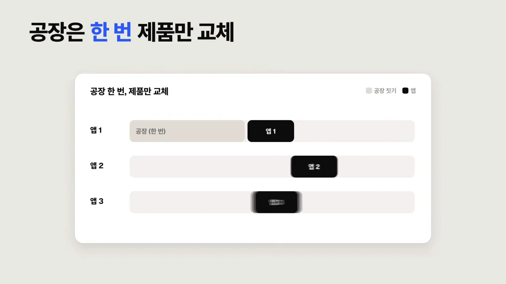
PRD부터 써요
AI에게 바로 "운동 기록 앱 만들어 줘"라고 하면 결과가 의도와 어긋나기 쉬워요. 그래서 첫 단계는 기획 문서, 즉 PRD예요. 발표자가 꼽는 가장 효과적인 방법은 벤치마킹할 앱의 주요 화면 캡처를 주면서, 만들고 싶은 기능을 말로 설명하는 거예요.
실습은 Claude 데스크톱에서 빈 폴더 make-apps를 지정하고 시작해요. 프롬프트 맨 위에 레퍼런스 앱 캡처 4장이 붙어 있고, 아래쪽에 '기능별 완료 기준'과 '예상 스택'이 보여요. 마지막 줄은 애매하면 먼저 질문하고, 다 쓰면 docs/PRD.md로 저장하라는 지시예요.
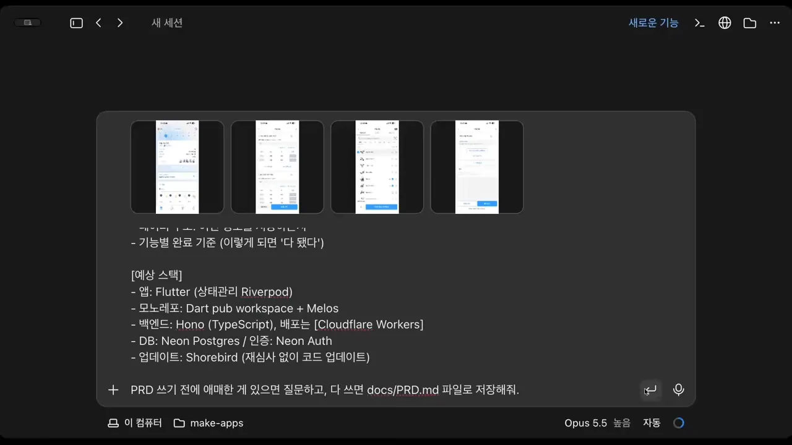
AI는 운동 종목 목록을 어떻게 할지, 지난 운동을 불러올지 같은 질문을 먼저 던졌고, 발표자는 전부 추천안으로 답했어요. 완성된 PRD는 왼쪽에 문서 구성을, 오른쪽에 화면 흐름도를 보여 줘요. 흐름도에는 S0 시작부터 S11 내 종목 관리까지 화면 12개가 화살표로 이어져 있어요. 왼쪽 목록에는 MVP(Minimum Viable Product) 범위, 데이터 구조, 기능별 완료 기준, M1~M7 구현 순서가 정리돼 있어요.
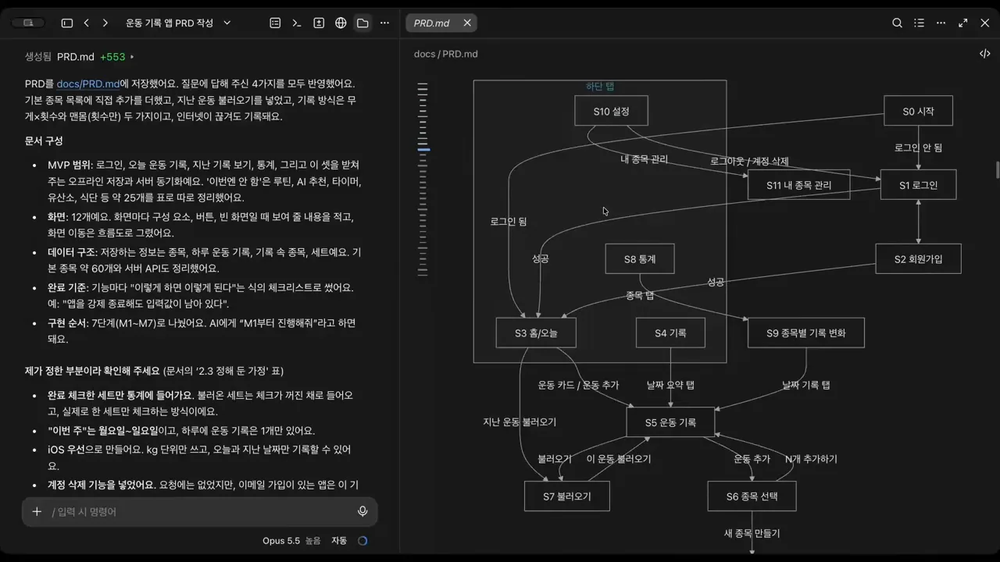
앱 공장(모노레포) 짓기
모노레포는 여러 앱이 한 창고에 살면서 공통 부품을 나눠 쓰는 구조예요. 슬라이드의 my-app-factory/ 안을 보면 위쪽 apps/에 운동기록 앱과 다음 앱이 있고, 아래 packages/에 디자인·로그인·데이터·유틸·공통 백엔드 네 칸이 있어요. 다음 앱에서 내려온 파란 선이 이 부품들로 이어져요.
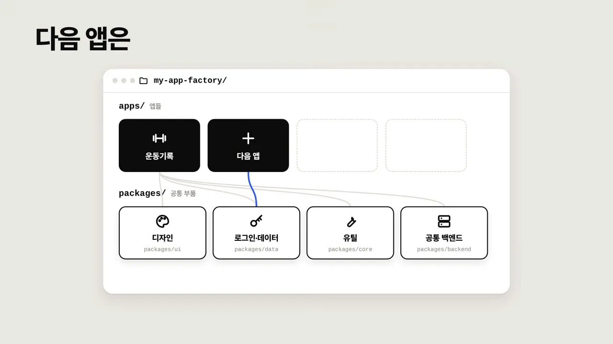
공장을 짓기 전에 개발 스택을 정해 둬요. 그래야 AI가 공장을 정확하게 짓고, 기능 개발도 수월해져요. 발표자는 Flutter와 Neon으로 개발하고, 이 스택은 모두 무료라고 해요. 앞의 PRD 프롬프트에 적힌 예상 스택을 펼치면 이래요.
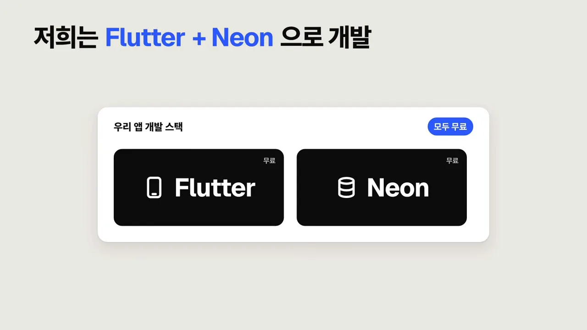
| 자리 | 프롬프트에 적은 것 | 하는 일 |
|---|---|---|
| 앱 | Flutter (상태 관리 Riverpod) | 코드 하나로 안드로이드·아이폰 앱을 만들어요 |
| 모노레포 | Dart pub workspace + Melos | 여러 앱과 공통 부품을 한 저장소에서 관리해요 |
| 백엔드 | Hono (TypeScript), Cloudflare Workers에 배포 | 모든 앱이 같이 쓰는 서버예요 (개발 중 빠져요, 다음 절) |
| DB(Database)·인증 | Neon Postgres / Neon Auth | 데이터 저장과 회원가입·로그인이에요 |
| 업데이트 | Shorebird | 재심사 없이 코드를 업데이트해요 |
공장 짓기 프롬프트를 넣고 1~2시간 정도 지나면 공장이 완성돼요. Claude가 보여 준 실제 폴더 구조는 슬라이드와 조금 달라요. 백엔드가 packages/가 아니라 apps/backend/에 있고, 공통 부품은 ui/(색·글꼴·버튼·카드), data/(로그인, 서버와 대화하기), core/(날짜·숫자 표시, 에러 문구, 설정값 읽기) 세 개예요. 그 아래에는 공장의 규칙이 적혀 있어요.
- 앱은 부품 창고에서 부품을 가져다 조립만 해요. 앱끼리는 서로 건드리지 않아서 2호 앱을 만들어도 1호 앱이 망가지지 않아요.
- 앱마다 다른 건 브랜드 색 하나예요.
- 비밀값은 각 폴더의
.env에만 넣고, git에는 빈 양식인.env.example만 올려요. - 새 앱 만드는 10단계 설명서를
CLAUDE.md에 적어 둬서, 다음에 "습관 앱 만들어 줘"라고만 하면 돼요.
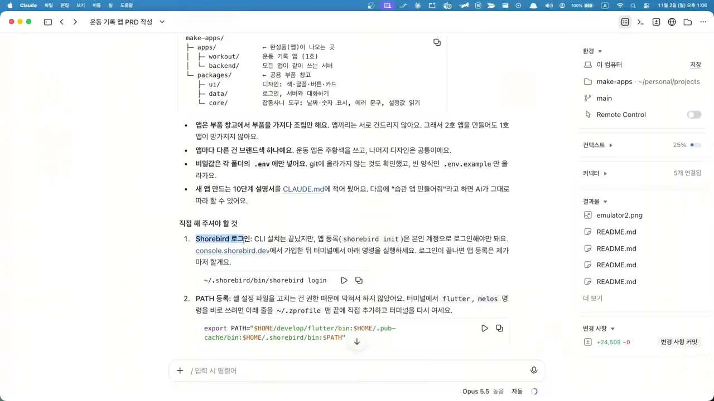
PATH 등록이에요. 영상 03:40에서 보기Shorebird 로그인은 사이트를 열고 로그인한 뒤 인증 버튼만 누르면 끝이에요. 화면에는 'Shorebird CLI wants to access your Shorebird account'라는 창과 오른쪽 아래 초록색 Authorize 버튼이 떠요. Claude로 돌아가면 로그인을 알아서 감지하고 다음 단계로 넘어가요.
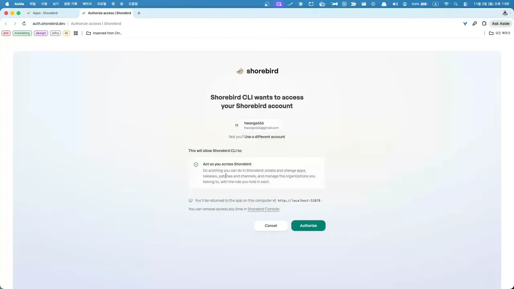
기능 개발: Neon 연결과 자동 테스트
이제 PRD를 읽고 개발하라고 시켜요. Claude는 자기가 못 하고 사람이 해 줘야 할 일을 목록으로 줘요. 화면의 1번은 Neon 프로젝트 만들기(이름 make-apps, 지역은 Singapore 같은 가까운 아시아), 2번은 DB 주소 복사, 3번은 로그인 기능 켜고 주소 복사예요. 2번에는 '비밀값이에요'라는 표시가 붙어 있어요.
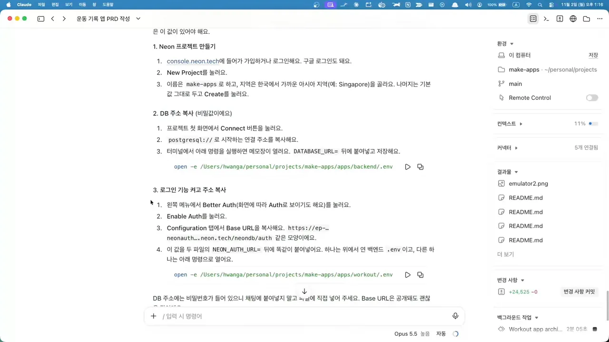
Neon에 가입해 프로젝트를 만들면 Branch overview 화면이 나와요. 왼쪽 위 초록색 Connect 버튼을 누르면 연결 주소가 나오고, 비밀번호가 보이게 바꿔서 복사해요. 가운데 서비스 목록에는 Postgres database, Better Auth, Object storage 같은 Neon 기능이 줄지어 있어요.
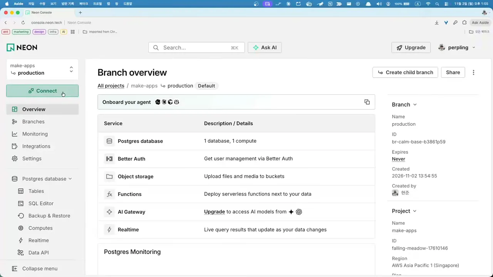
로그인 주소는 왼쪽 메뉴의 Better Auth에서 가져와요. 이 화면 오른쪽 아래 검은 Configure Auth 버튼을 누르면 바로 Auth URL(Uniform Resource Locator)이 보여요.
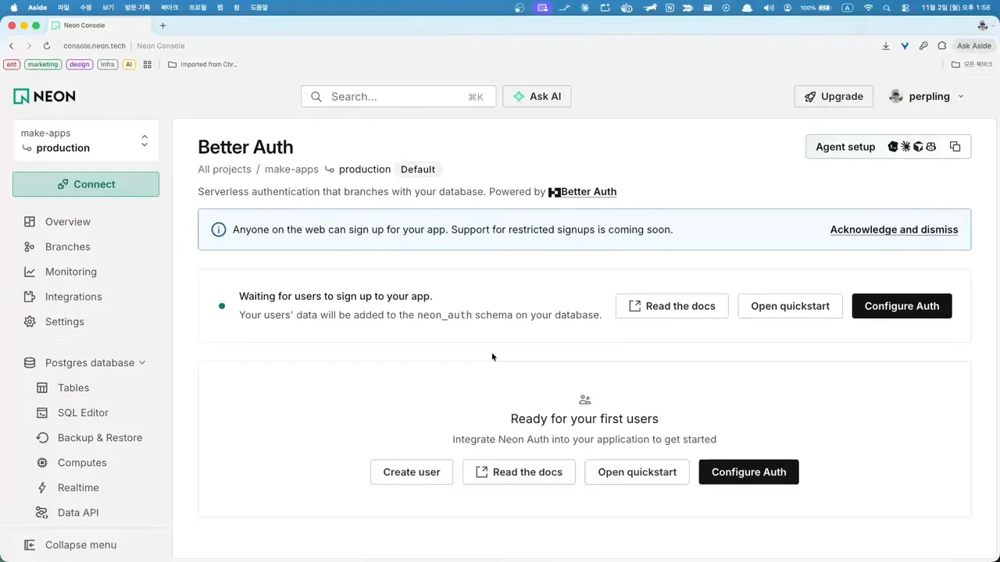
작업 도중 Claude가 하나를 더 부탁해요. Data API(Application Programming Interface) 켜기예요. 안내문 2번에는 Use Neon Auth는 체크하고 Grant public schema access는 체크하지 말라고 적혀 있어요. 권한은 Claude가 DB 규칙으로 더 꼼꼼하게 넣겠다는 이유예요. 아래 회색 상자에는 'Data API 방식(별도 서버 없음)으로 바꾸기로 했다'는 보고와, 작업 중 DB 비밀번호가 작업 기록에 노출되는 사고가 있었다는 보고가 함께 보여요.
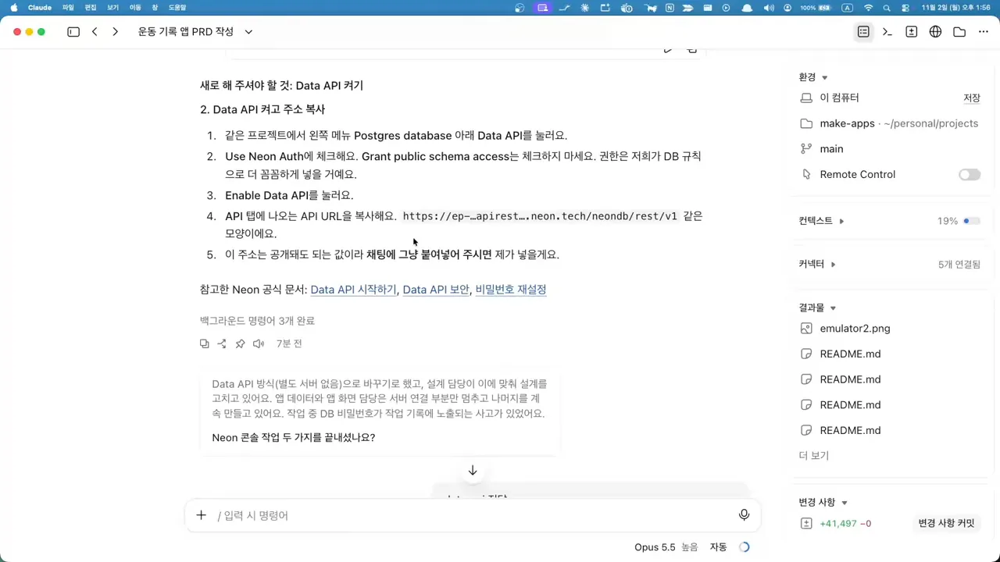
apps/backend 삭제를 제안해요. 영상 04:56에서 보기넘겨준 값 세 개를 정리하면 이래요. 비밀번호가 든 값은 파일에, 공개돼도 되는 값은 채팅으로 넘긴 게 차이예요.
| 값 | Neon에서 찾는 곳 | 넘기는 방법 |
|---|---|---|
DATABASE_URL | Connect 버튼 → postgresql://로 시작하는 주소 (비밀번호 보이게) | 메모장으로 열린 backend/.env에 직접 붙여 넣어요. 채팅에는 붙이지 않아요 |
NEON_AUTH_URL | Better Auth → Configure Auth → Base URL | 백엔드와 운동 앱의 .env 두 곳에 똑같이 넣어요 |
| Data API URL | Data API → Enable → API 탭의 URL | 채팅으로 넘겨요. Claude가 알아서 파일에 넣어요 |
AI가 직접 시험해요
개발이 끝나면 Claude가 확인 결과를 표로 보고해요. 코드 검사(melos analyze)는 4개 패키지 모두 통과, 앱 테스트(melos test)는 240개 통과, 보안 규칙을 포함한 DB 테스트는 54개 통과예요. 맨 아래 줄은 실제 Neon으로 가입부터 계정 삭제 후 로그인 불가까지 이어서 돌린 자동 시험이에요.
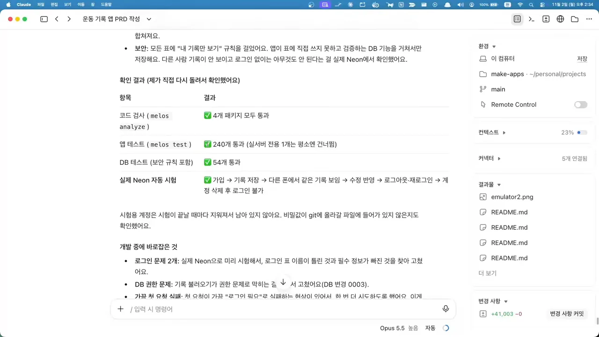
이어서 에뮬레이터 시험을 진행하겠다고 해서 그대로 맡겨요. 시간이 지나면 Claude가 알아서 안드로이드 에뮬레이터를 띄우고, 회원가입 화면에 시험용 이메일을 넣어요. 왼쪽 체크 목록에는 'Test signup→log→history→stats on emulator'가 진행 중으로 표시돼 있어요.
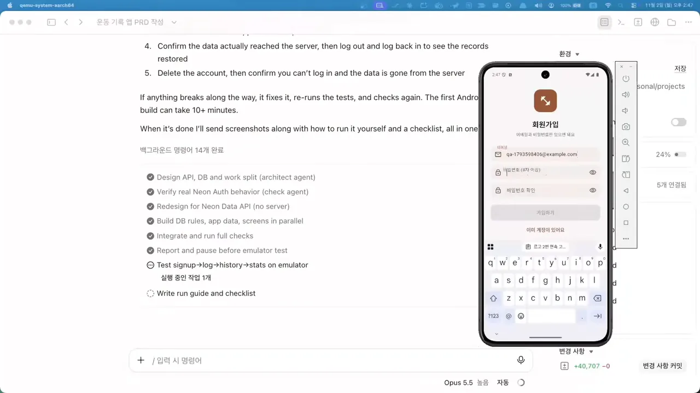
시험이 끝나면 주요 화면 캡처와 함께 단계별 결과를 줘요. 표를 보면 벤치프레스 40kg×10, 42.5kg×8과 풀업 12회를 기록했을 때 볼륨이 740kg으로 맞게 계산돼요. 와이파이를 끄고 기록해도 다시 켜면 3초 안에 서버로 올라가고, 계정을 지우면 서버 데이터도 0건이 돼요.
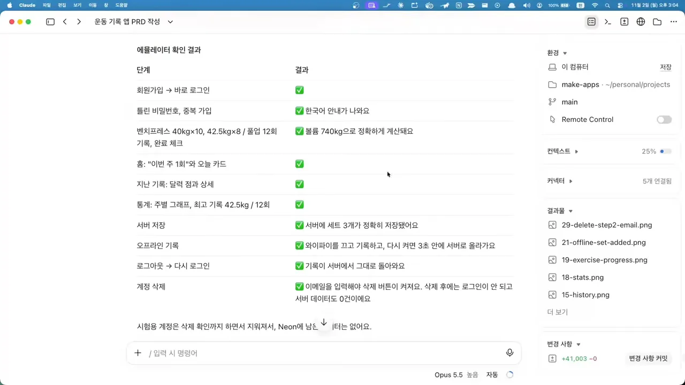
아이콘과 스토어 스크린샷
기능 개발이 끝나면 스토어에 보여 줄 아이콘과 스크린샷을 만들어요. 재료는 이미 있어요. 에뮬레이터 시험 때 Claude가 찍어 둔 실제 화면들이에요. 위쪽 줄은 가입 직후, 세트 완료, 홈 카드, 지난 기록 화면이고, 아래 줄 오른쪽 끝에는 계정 삭제 확인 창이 보여요.
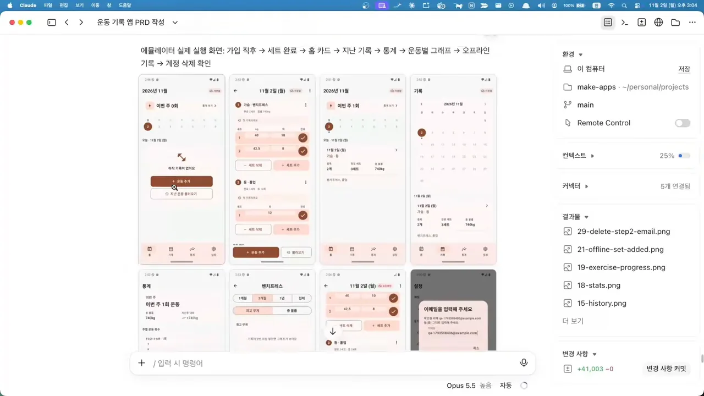
앱 이름은 '헬스크크'로 정했어요. 프롬프트의 [앱 아이콘] 부분은 시안 3개를 코드(SVG(Scalable Vector Graphics))로 그려 비교 이미지로 보여 주고, 고른 걸 애플용 1024×1024 PNG(투명 배경 X)와 구글용 512×512 PNG, 안드로이드 적응형 아이콘으로 내보내라는 내용이에요. [스토어 스크린샷] 부분은 샘플 데이터로 앱을 돌려 기록·지난 기록·통계·로그인 화면을 캡처하고, 위쪽에 한 줄 문구와 폰 프레임을 씌우라는 내용이에요.
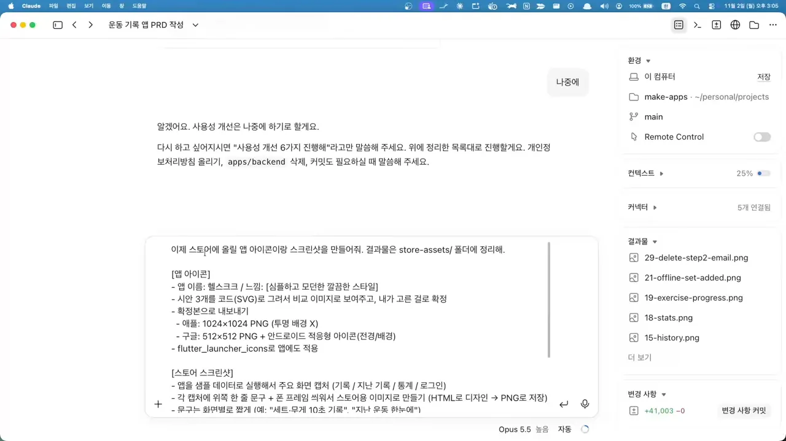
약 30분 뒤 시안 세 개가 나왔어요. 비교 화면은 시안마다 큰 원본, 앱 아이콘 모양, 원형, 그리고 밝은·어두운 홈 화면에 놓인 모습을 나란히 보여 줘요. A는 원판 그래프, B는 'ㅎ' 모노그램이에요.
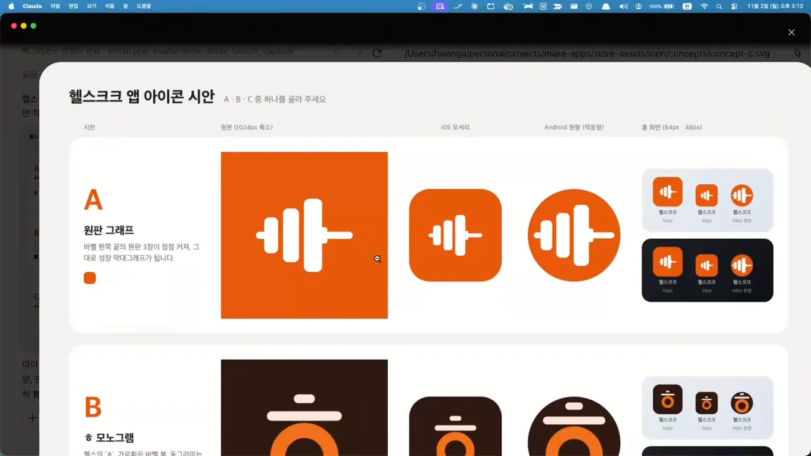
세 번째 시안 C는 웃는 얼굴 모양 덤벨이에요. 왼쪽 Claude 설명은 B를 추천해요. 'ㅎ'이 한글이면서 운동 기구 모양이라 개성 있고, 작은 크기에서도 또렷하다는 이유예요. A는 운동 앱이라는 게 한눈에 보이지만 흔한 느낌이고, C는 이름과 어울리지만 밝은 배경에서 묻힌다고 평가해요. 아래 선택 버튼은 'B ㅎ 모노그램'과 'A 원판 그래프' 두 개예요.
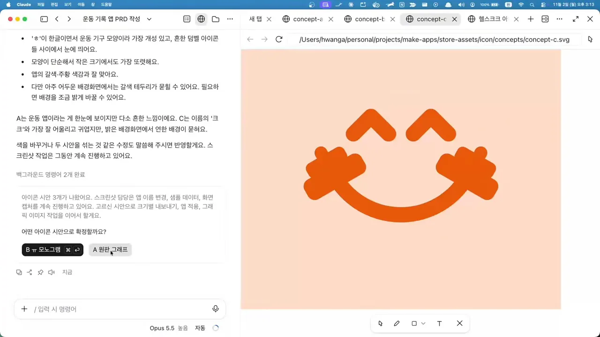
A로 확정하자 스토어 에셋이 한 번에 나와요. 왼쪽 표가 만든 것 목록이에요. 애플 아이콘 1024×1024, 구글 아이콘 512×512, 안드로이드 적응형 아이콘, 구글 플레이 스크린샷 1080×1920 4장, 구글 플레이 그래픽 이미지 1024×500, 앱스토어 6.9인치 1320×2868 4장까지 크기와 위치가 정리돼 있어요.
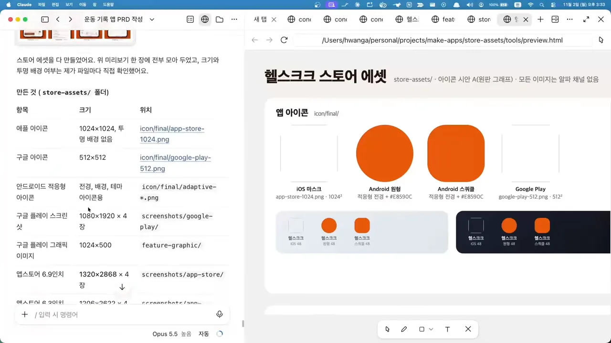
스크린샷은 주황 배경 위에 굵은 문구와 실제 앱 화면을 얹은 4장이에요. 문구는 '세트·무게 10초 기록', '늘어나는 무게를 그래프로', '지난 운동 한눈에', '가입하면 바로 시작'이에요. 발표자는 전반적으로 나쁘지 않아서 그대로 쓰기로 해요.
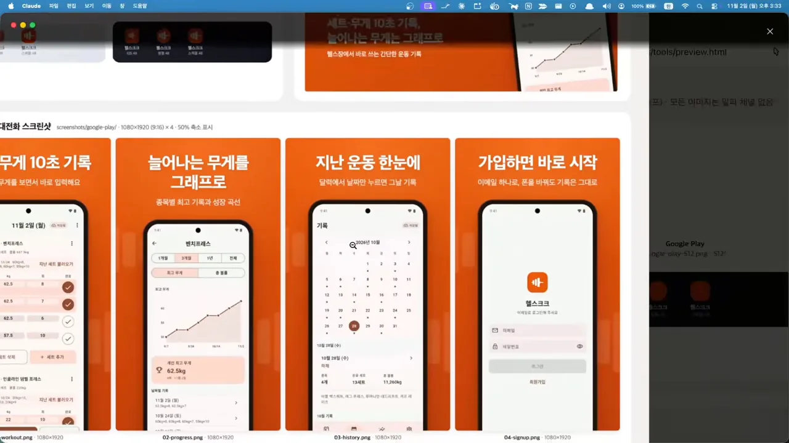
스토어 출시와 심사 없는 업데이트
지금 만든 앱은 Flutter라서 코드 하나로 안드로이드와 아이폰 앱이 둘 다 나와요. 슬라이드 가운데 lib/main.dart 카드에 '코드 1개' 배지가 붙어 있고, 거기서 Android와 iPhone 두 폰으로 선이 갈라져요.
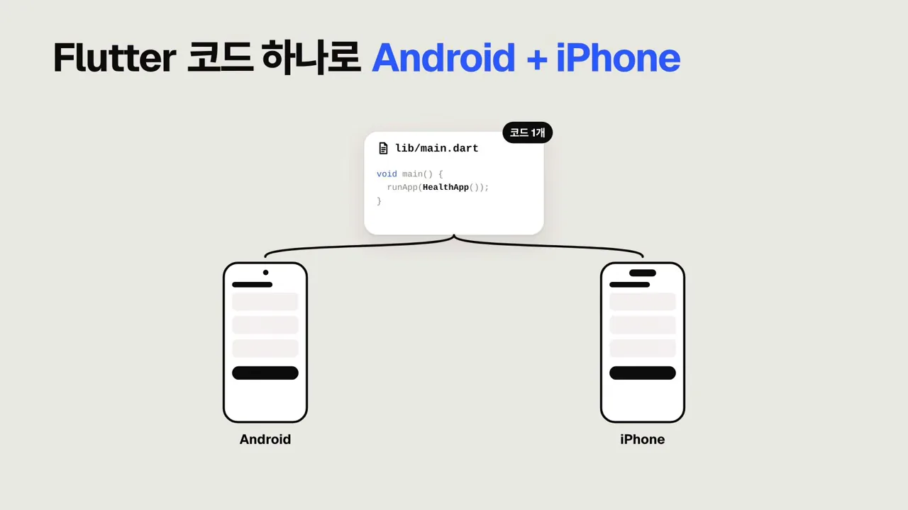
스토어에 올리려면 두 곳에 개발자 계정을 등록해야 해요. 영상에서 나온 조건을 스토어별로 모으면 이래요.
| 항목 | 구글 | 애플 |
|---|---|---|
| 등록하는 곳 | Google Play Console | App Store Connect |
| 개발자 등록비 | 처음 1회 25달러 | 매년 99달러 |
| 출시 전 조건 | 테스터 12명이 14일 동안 사용 (조직 계정은 면제) | 영상에서 따로 다루지 않아요 |
| 설치 파일 | .aab | .ipa |
| 사람이 할 일 | AI가 만든 서명 키 파일과 비밀번호를 백업 | 개발자 프로그램 가입, Xcode에 Apple ID 로그인, 팀 ID 전달 |
구글의 함정: 테스터 12명 × 14일
구글은 바로 심사를 받을 수 없어요. 테스터 12명이 14일 동안 앱을 써야 심사 신청이 열려요. 슬라이드 왼쪽 사람 아이콘 12개와 오른쪽 날짜 칸 14개가 이 조건이에요.
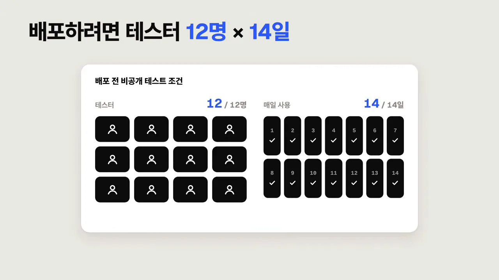
해결법은 두 가지예요. 첫째, 개발자 품앗이 커뮤니티(네이버 카페)에 내 앱을 올리고 테스터를 모아요. 서로의 앱을 테스트해 주는 방식이라 무료예요. 둘째, 전문 업체를 써요. 크몽에서 '구글 비공개 테스트'를 검색하면 구글 내부 테스트만 해 주는 상품이 나와요. 화면의 가격은 5,000원부터 48,000원까지예요. 첫 번째 방법이 귀찮으면 이쪽을 쓰면 돼요.
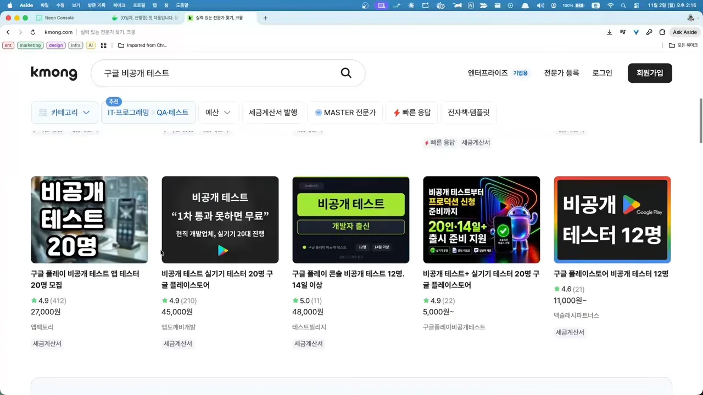
사업자가 있다면 조직 계정을 만들 수 있고, 그러면 12명 테스트를 거치지 않아도 돼요. 슬라이드는 개인 계정과 조직 계정 토글 아래에 구글 플레이 배포 전 필요한 것으로 등록비 25달러와 '테스터 12명 × 14일 필수'를 적어 둬요.
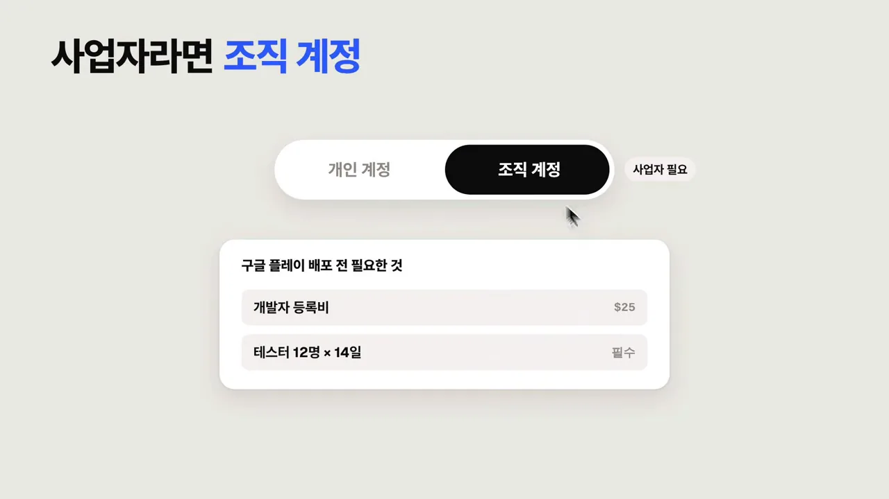
그다음은 출시 심사를 요청하고, 통과하면 스토어에 올라가요. 반려되면 구글이 반려 사유를 알려 주는데, 그 사유를 AI에게 그대로 넘기면 빠르게 고쳐요. 구글 쪽 흐름을 한 장으로 그리면 이래요.
flowchart LR
A["개발자 계정 등록 (1회 25달러)"] --> B{"계정 종류"}
B -->|개인| C["비공개 테스트 12명 × 14일"]
B -->|"조직·사업자"| D["출시 심사 요청"]
C --> D
D -->|통과| E["스토어에 공개"]
D -->|반려| F["반려 사유를 AI에게 전달"]
F --> D
출시 뒤 업데이트는 Shorebird로
앱을 운영하다 보면 코드를 고치거나 기능을 더할 때마다 구글·애플 앱을 각각 빌드해서 올리고 심사받아야 해요. 슬라이드는 코드 수정 → 빌드 ×2 → 스토어 업로드 ×2 → 심사 대기를 도는 고리에 '×5'를 붙여요. 그 위로 파란 'Shorebird · 심사 없이' 화살표가 고리를 건너뛰고 폰으로 바로 가요. 아래 상자는 앱 공장 프롬프트의 '업데이트: Shorebird (재심사 없이 코드 업데이트)' 줄이에요.
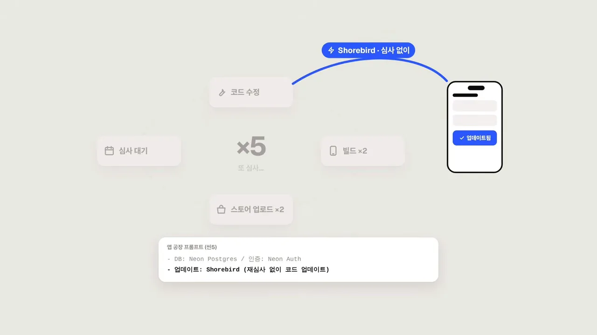
물론 다 건너뛰지는 못해요. 다음 슬라이드는 앱 업데이트를 두 줄로 나눠요. 위쪽 '네이티브 기능 추가(카메라·결제 같은 기기 기능)'는 짧은 검은 막대에 '스토어 심사' 표시가 붙고, 아래 '그 외 대부분의 수정(화면·기능·버그 수정)'은 긴 파란 막대에 'Shorebird · 즉시' 표시가 붙어요.
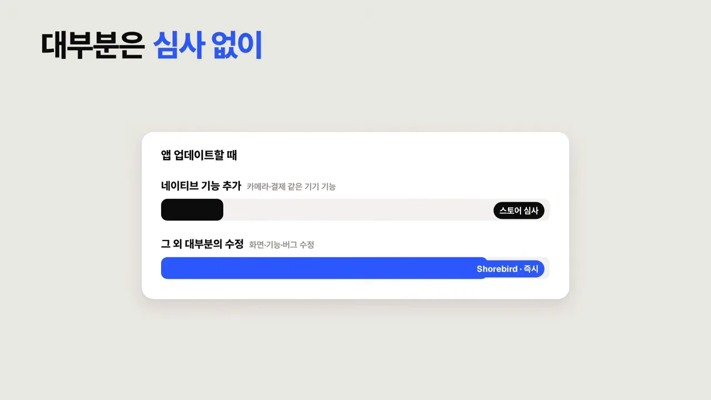
설치 파일 만들고 올리기
마지막으로 실제 폰에 설치할 파일을 만들어요. 애플에 올리는 파일과 구글에 올리는 파일은 서로 달라요. 간단한 세팅만 해 두면 AI가 바로 만들어 줘요. Claude의 안내를 보면 구글용(.aab)은 서명 키 생성부터 빌드까지 AI가 다 하고, 사람은 서명 키 파일과 비밀번호를 본인만 아는 곳에 백업하면 돼요. 애플용(.ipa)은 애플 개발자 프로그램 가입, Xcode에 Apple ID 로그인, developer.apple.com에서 10자리 팀 ID 전달까지 세 가지만 사람이 해요.
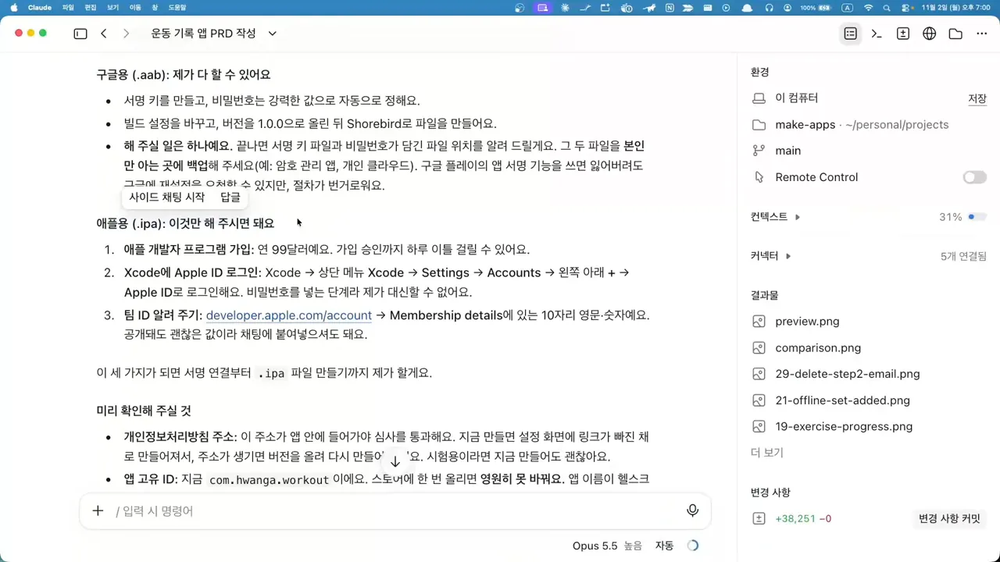
com.hwanga.workout)는 한 번 올리면 영원히 못 바꿔요. 영상 08:40에서 보기파일이 준비되면 아이폰은 App Store Connect, 안드로이드는 Google Play Console에 가서 앱 정보를 넣고 파일을 올려 배포해요. 발표자는 이렇게 비전공자도 앱을 만들어 배포할 수 있고, 다음 앱을 찍어 낼 공장까지 갖췄다고 정리해요. 결제를 붙이고 수익을 내는 법은 다음 편에서 다룬대요.